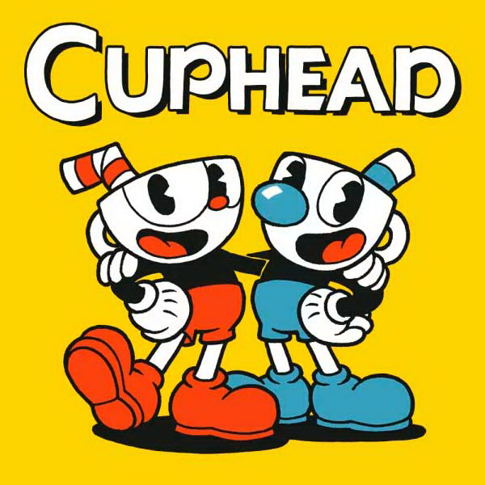

Cuphead é um jogo brilhantemente desenvolvido, sem bugs ou falhas encontradas durante o jogo. Este jogo definitivamente vale a pena comprar. Se você gosta desse peculiar estilo de animação inspirado nos anos 30 e se gosta de desafios difíceis (que eu acredito que podem ser um pouco difíceis demais para os jogadores mais jovens concluírem), com uma variedade de níveis diferentes e coloridos e com um enredo bom e divertido, este jogo é para VOCÊ. Existem dois personagens em Cuphead, então dois jogadores podem jogar este jogo, o próprio Cuphead e seu irmão Mugman. Os desafios que você terá que completar ao longo do caminho são sempre diferentes e divertidos. Conforme você avança, os níveis começam a ficar mais desafiadores, mas essa é a parte divertida. Cuidado! Cuphead pode ser viciante, Cuphead pode mantê-lo jogando por muito mais horas enquanto você tenta o seu melhor para completar os níveis. Mas entre os níveis você pode fazer uma pausa, pois pode percorrer os mapas existentes e conversar com os diferentes personagens e comprar itens úteis (amuletos, armas) do lojista, Porkrind, que o ajudarão nos níveis mais difíceis. Mas não devemos desconsiderar o belo estilo de arte. O estilo de arte é único e antiquado, lembrando muito as animações dos anos 30 de empresas cinematográficas como a Fleischer Studios. E a trilha sonora de jazz ao fundo é apenas a cereja no topo! Os fundadores fizeram um excelente trabalho, mantendo o jogo original e divertido. Embora não tenha conseguido terminar o jogo inteiro, pensei em Cuphead e lembrei-me de como esse jogo era bom de muitas maneiras, e senti que tinha que revisar isso e jogá-lo novamente com meu amigo. Este jogo definitivamentemerece sua atenção se você ainda não o experimentou!